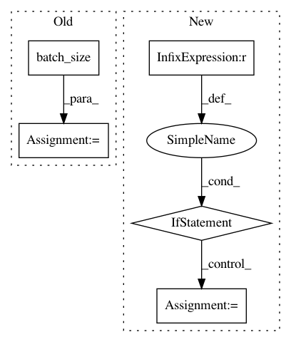

6d58d7a01b720cae9cbee94534d6d6bbb04219ee,hypergan/samplers/random_walk_sampler.py,RandomWalkSampler,_sample,#RandomWalkSampler#,15
Before Change
self.z = gan.latent.sample.eval()
self.target = gan.latent.sample.eval()
self.input = gan.session.run(gan.inputs.x)
self.input = np.tile(self.input[0], [gan.batch_size(), 1, 1, 1])
if self.step > self.steps:
self.z = self.target
self.target = gan.latent.sample.eval()
self.step = 0
percent = float(self.step)/self.steps
z_interp = self.z*(1.0-percent) + self.target*percent
self.step+=1
output = gan.session.run(gan.generator.sample, feed_dict={z_t: z_interp, inputs_t: self.input})
output[0] = self.input[0]
g=tf.get_default_graph()
with g.as_default():
tf.set_random_seed(1)
return {
After Change
percent = float(self.step % self.steps)/self.steps
z_interp = self.z*(1.0-percent) + self.target*percent
self.step+=1
if self.step % 360 == 0:
gan.session.run(gan.set_x)
self.input = gan.session.run(gan.inputs.x)
output = gan.session.run(gan.generator.sample, feed_dict={z_t: z_interp, inputs_t: self.input})
g=tf.get_default_graph()
with g.as_default():
tf.set_random_seed(1)
In pattern: SUPERPATTERN
Frequency: 3
Non-data size: 5
Instances
Project Name: HyperGAN/HyperGAN
Commit Name: 6d58d7a01b720cae9cbee94534d6d6bbb04219ee
Time: 2019-08-02
Author: mikkel@255bits.com
File Name: hypergan/samplers/random_walk_sampler.py
Class Name: RandomWalkSampler
Method Name: _sample
Project Name: cornellius-gp/gpytorch
Commit Name: f76a4dabb4cd38ee58d01a35c5b511e224d060d2
Time: 2018-09-17
Author: gpleiss@gmail.com
File Name: gpytorch/lazy/sum_batch_lazy_tensor.py
Class Name: SumBatchLazyTensor
Method Name: _matmul
Project Name: HyperGAN/HyperGAN
Commit Name: 7066c72279f2fd0f5d0a6b7c3c57e5398dfe7813
Time: 2018-12-05
Author: mikkel@255bits.com
File Name: examples/colorizer.py
Class Name: Sampler
Method Name: sample